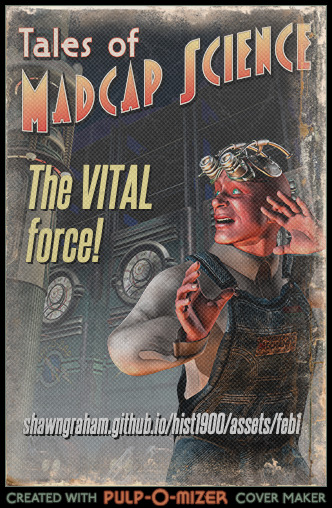
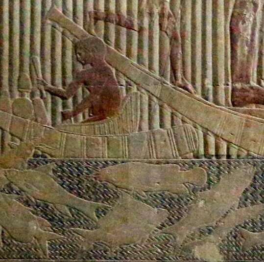
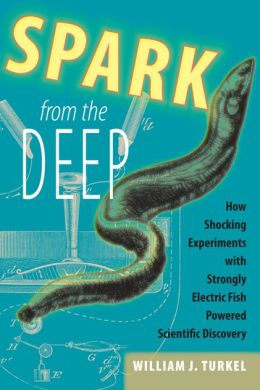
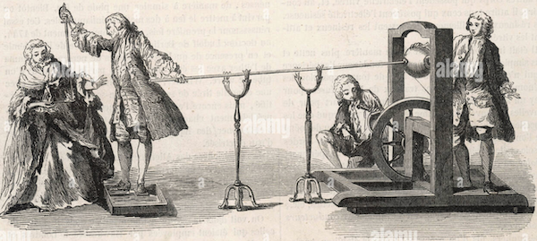
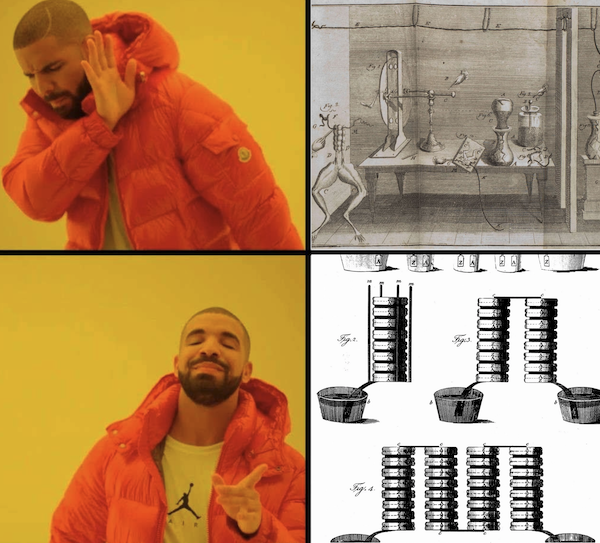
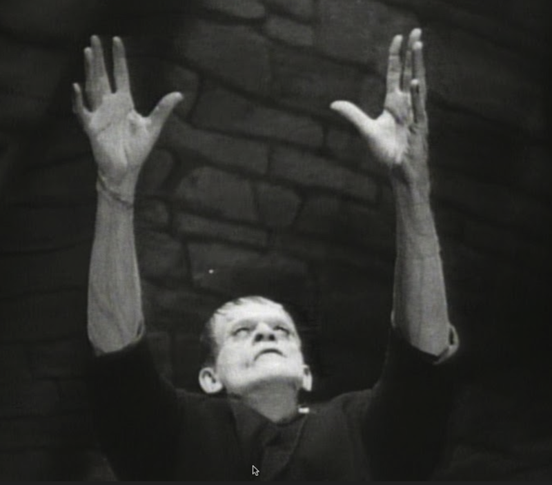

<!DOCTYPE html>
<html lang="en">
  <head>
    <meta charset="utf-8" />
    <meta name="viewport" content="width=device-width, initial-scale=1.0, maximum-scale=1.0, user-scalable=no" />

    <title></title>
    <link rel="stylesheet" href="dist/reveal.css" />
    <link rel="stylesheet" href="dist/theme/night.css" id="theme" />
    <link rel="stylesheet" href="plugin/highlight/zenburn.css" />
	<link rel="stylesheet" href="css/layout.css" />
	<link rel="stylesheet" href="plugin/customcontrols/style.css">


    <script defer src="dist/fontawesome/all.min.js"></script>

	<script type="text/javascript">
		var forgetPop = true;
		function onPopState(event) {
			if(forgetPop){
				forgetPop = false;
			} else {
				parent.postMessage(event.target.location.href, "app://obsidian.md");
			}
        }
		window.onpopstate = onPopState;
		window.onmessage = event => {
			if(event.data == "reload"){
				window.document.location.reload();
			}
			forgetPop = true;
		}

		function fitElements(){
			const itemsToFit = document.getElementsByClassName('fitText');
			for (const item in itemsToFit) {
				if (Object.hasOwnProperty.call(itemsToFit, item)) {
					var element = itemsToFit[item];
					fitElement(element,1, 1000);
					element.classList.remove('fitText');
				}
			}
		}

		function fitElement(element, start, end){

			let size = (end + start) / 2;
			element.style.fontSize = `${size}px`;

			if(Math.abs(start - end) < 1){
				while(element.scrollHeight > element.offsetHeight){
					size--;
					element.style.fontSize = `${size}px`;
				}
				return;
			}

			if(element.scrollHeight > element.offsetHeight){
				fitElement(element, start, size);
			} else {
				fitElement(element, size, end);
			}		
		}


		document.onreadystatechange = () => {
			fitElements();
			if (document.readyState === 'complete') {
				if (window.location.href.indexOf("?export") != -1){
					parent.postMessage(event.target.location.href, "app://obsidian.md");
				}
				if (window.location.href.indexOf("print-pdf") != -1){
					let stateCheck = setInterval(() => {
						clearInterval(stateCheck);
						window.print();
					}, 250);
				}
			}
	};


        </script>
  </head>
  <body>
    <div class="reveal">
      <div class="slides"><section  data-markdown><script type="text/template"><!-- .slide: class="drop" -->
<div class="" style="position: absolute; left: 0px; top: 0px; height: 700px; width: 960px; min-height: 700px; display: flex; flex-direction: column; align-items: center; justify-content: center" absolute="true">

<div class="" style="transform: rotate(-15deg); position: absolute; left: 0%; top: 0%; height: 100%; width: 50%; display: flex; flex-direction: column; align-items: center; justify-content: center" >



</div>

<div align="right">

<Br><Br><Br>

# Electric History

</div>

<br><Br>[shawngraham.github.io/hist1900/assets/slides/feb1]([shawngraham.github.io/hist1900/assets/slides/feb1)
</div></script></section><section  data-markdown><script type="text/template"><!-- .slide: class="drop" -->
<div class="" style="position: absolute; left: 0px; top: 0px; height: 700px; width: 960px; min-height: 700px; display: flex; flex-direction: column; align-items: center; justify-content: center" absolute="true">

cw: some gory stuff today
</div></script></section><section  data-markdown><script type="text/template"><!-- .slide: class="drop" -->
<div class="" style="position: absolute; left: 0px; top: 0px; height: 700px; width: 960px; min-height: 700px; display: flex; flex-direction: column; align-items: center; justify-content: center" absolute="true">


Eryk Salvaggio [read](https://www.cyberneticforests.com/news/worlding-sympoietic-mycology) | [listen](https://www.youtube.com/watch?v=8z3MsZRNEH8)
</div>

<aside class="notes"><p>In order for us to tie up the last thread, the last piece of our mushroom-approach to the history of the internet, we have to talk about electricity.</p>
<p>What we&#39;re listening to - apparently mushrooms communicate by making voltage spikes across their networks.</p>
</aside></script></section><section  data-markdown><script type="text/template"><!-- .slide: class="drop" -->
<div class="" style="position: absolute; left: 0px; top: 0px; height: 700px; width: 960px; min-height: 700px; display: flex; flex-direction: column; align-items: center; justify-content: center" absolute="true">

Lots of animals make electricity

<split even>





</split>

Electric catfish in the nile; Mastaba Ti, 5th dynasty (old kingdom)
</div>

<aside class="notes"><p>other animals noted to depend on magnetism, which is part of the same force.</p>
</aside></script></section><section  data-markdown><script type="text/template"><!-- .slide: class="drop" -->
<div class="" style="position: absolute; left: 0px; top: 0px; height: 700px; width: 960px; min-height: 700px; display: flex; flex-direction: column; align-items: center; justify-content: center" absolute="true">


</div>

<aside class="notes"><p>Luigi Galvani 1737-1798. The calipers - one part made of brass, the other part with iron; had been interested in what happened to the legs in the presence of lightenning, but the legs would twitch when the two prongs touched the nerve. Felt that this was indicative of an &#39;animal force&#39;</p>
</aside></script></section><section  data-markdown><script type="text/template"><!-- .slide: class="drop" -->
<div class="" style="position: absolute; left: 0px; top: 0px; height: 700px; width: 960px; min-height: 700px; display: flex; flex-direction: column; align-items: center; justify-content: center" absolute="true">

George Forster 

<div align = "left">

> On the first application of the process to the face, the jaws of the deceased criminal began to quiver, and the adjoining muscles were horribly contorted, and one eye was actually opened. 
> 
> In the subsequent part of the process the right hand was raised and clenched, and the legs and thighs were set in motion. Mr Pass, the beadle of the Surgeons' Company, who was officially present during this experiment, was so alarmed that he died of fright soon after his return home. [Newgate Calendar](https://www.exclassics.com/newgate/ng464.htm)

</div>
</div>

<aside class="notes"><p>law in early 19th c england that corpses of murders could be used for scientific experimentation, public education. George Forster londoner hanged at Newgate prison in London for murder of his wife &amp; child (probably wasn&#39;t guilty). There was &#39;scientific&#39; dispute about when life ended or whether it was reversible; not wanting him to suffer, Foster&#39;s friends grabbed and pulled on his legs as he fell so as to make sure his neck snapped/was very dead.</p>
<p>Giovani Aldini, nephew of Galvani was presented and obtained the course - figured the freshly dead could be reanimated, that their vital force remained. - as on the screen - other such experiments with executed people were performed.</p>
</aside></script></section><section  data-markdown><script type="text/template"><!-- .slide: class="drop" -->
<div class="" style="position: absolute; left: 0px; top: 0px; height: 700px; width: 960px; min-height: 700px; display: flex; flex-direction: column; align-items: center; justify-content: center" absolute="true">

<iframe width="560" height="315" src="https://www.youtube.com/embed/1qNeGSJaQ9Q" title="YouTube video player" frameborder="0" allow="accelerometer; autoplay; clipboard-write; encrypted-media; gyroscope; picture-in-picture; web-share" allowfullscreen></iframe>
</div>

<aside class="notes"><p>Mary Shelley&#39;s Frankenstein, or, The Modern Prometheseus 1818 draws on so many of the ahem currents in western society at the time. The fear of one&#39;s body being dismembered after death, the fear of this &#39;electrical force&#39; which people did not quite what to do with. Never mind the literary merits of the book, it gives a very good sense that folks are rushing ahead and devising uses for things they don&#39;t fully understand or know what will be unleashed.</p>
</aside></script></section><section  data-markdown><script type="text/template"><!-- .slide: class="drop" -->
<div class="" style="position: absolute; left: 0px; top: 0px; height: 700px; width: 960px; min-height: 700px; display: flex; flex-direction: column; align-items: center; justify-content: center" absolute="true">

<div align="left">

## Let's Back Up
## a Wee Bit

Hey, what were the ancient greeks up to?

ἤλεκτρον (_elektron_), 'amber'
<br><Br><Br><Br><Br><Br><br><Br><Br><br>

</div>

<div class="" style="transform: rotate(-15deg); position: absolute; left: 0%; top: 35%; height: 30%; width: 170%; display: flex; flex-direction: column; align-items: center; justify-content: center" >


</div>
</div>

<aside class="notes"><p>Thales of Miletus - 600 BC - believed that all things had a soul (Terry Pratchett, re dwarves, &#39;All things strive&#39;) - took the behaviour of magnets or lode stones (naturally magnetized iron) as one strand of evidence. Was interested in the fact that if you rub amber with wool, it starts attracting stuff - in spinning wool the distaff of the spindle could have amber on it (for decoration? for its attractive powers?)</p>
</aside></script></section><section  data-markdown><script type="text/template"><!-- .slide: class="drop" -->
<div class="" style="position: absolute; left: 0px; top: 0px; height: 700px; width: 960px; min-height: 700px; display: flex; flex-direction: column; align-items: center; justify-content: center" absolute="true">

What the hell is this stuff?
</div>

<aside class="notes"><p>The precise use of the word &#39;electric&#39; and &#39;electricity&#39; varies over the centuries, but starts getting used more or less in our sense in 16th, 17th century. Many individual observations over the years to do with attraction versus repelling, and the seeming interaction with magnets; all of it very mysterious. William Gilbert in 16th century observed how static electricity could attract a needle/lodestone; he framed it in the language of the &#39;humours&#39; of the body, and especially as &#39;exhalation&#39; - there&#39;s always been a connection between electricity and life, even when we didn&#39;t actually know that there <strong>was</strong> a connection between electricity and life.</p>
<ul>
<li>by 1729 people had worked out that whatever it was, it could also travel along materials, especially metals (and remember, we&#39;re still talking about static electricity)</li>
</ul>
</aside></script></section><section  data-markdown><script type="text/template"><!-- .slide: class="drop" -->
<div class="" style="position: absolute; left: 0px; top: 0px; height: 700px; width: 960px; min-height: 700px; display: flex; flex-direction: column; align-items: center; justify-content: center" absolute="true">

Can we store this stuff?
</div>

<aside class="notes"><p>1746, Pieter van Musschenbroek invents the Leyden jar - crazy set up. He was trying to capture static electricity - has a glass phial or jar of water, hanginf from a gun barrel by a wire through the cork in the top, where the wire goes into the bottle; gun barrel is suspended by silk near glass balls that have been thoroughly rubbed up full of static electricity. The assistant touches the phial, gets a terrible amplified shock - we now call this a capacitor, a device for storing up electricity for release</p>
</aside></script></section><section  data-markdown><script type="text/template"><!-- .slide: class="drop" -->
<div class="" style="position: absolute; left: 0px; top: 0px; height: 700px; width: 960px; min-height: 700px; display: flex; flex-direction: column; align-items: center; justify-content: center" absolute="true">

Hey, how fast does this stuff go?

_or, the fun you can have with 200 monks & 1 mile's worth of metal rods_




_you'd think there'd be a good illustration, but there isn't, so this'll have to do_
</div>

<aside class="notes"><p>Jean Antoine Nollet, also in 1746 wants to know how fast this electric force can travel. Arranges for 200 monks to stand in a circle, each holding one end of a metal rod which combined gives the circle a 1 mile radius. Then he electrified one of the monks by getting him to touch a Leyden jar (recently invented), hoping to see how fast the effect traveled by the monk&#39;s reaction. He had to conclude travels vritually instantly! Does the same thing again with 180 royal guards for the edification of Louis XV. Science!</p>
<p>Ben Franklin, roughly the same time, notices that an iron point can conduct electricity away from a charged iron sphere; does his famous kite experiment to demonstrate that static electricity and lightening are of the same kind of thing; develops lightening rods to protect buildings and ships</p>
<p>The idea that the stuff travels instantly, and can be channeled in various ways is emerging. People start using fluid metaphors.</p>
</aside></script></section><section  data-markdown><script type="text/template"><!-- .slide: class="drop" -->
<div class="" style="position: absolute; left: 0px; top: 0px; height: 700px; width: 960px; min-height: 700px; display: flex; flex-direction: column; align-items: center; justify-content: center" absolute="true">


</div>

<aside class="notes"><p>Alessandro Volta, 1745-1827 becomes aware of Galvani&#39;s experiments, and disagrees vehemently with him - V notes that experiment was with different medals through a moist body (recently deceased) - argues that the electrical current was a function of the interplay of moisture and the two different metals, NOT some innate animal force. To prove this, experiments and finds if he arranges two different kinds of metals in a pile of wet/dry/wet etc he can induce electricity to flow - calls this the &#39;pile&#39;. Which we now call a &#39;battery&#39;. 1800</p>
<p>Implication: we can now experiment with a constant current rather than static - which helps kick start systematic experiments and obersvation &amp; research into electricity.</p>
</aside></script></section><section  data-markdown><script type="text/template"><!-- .slide: class="drop" -->
<div class="" style="position: absolute; left: 0px; top: 0px; height: 700px; width: 960px; min-height: 700px; display: flex; flex-direction: column; align-items: center; justify-content: center" absolute="true">

<div align ="left">

Electricity and Magnets

Hans Christian Ørsted - works out that electric current in a nearby wire will deflect a compass needle; he works out that electric current produces a circular magnetic field

Michael Faraday - works out how to go the other way, that you could use a magnet to induce electricity.

Joseph Henry - inventor of many electrical devices, including the relay

_there was so much electricity in the air, as it were, that all of these things were being discovered by multiple people at much the same time_

</div>
</div>

<aside class="notes"><p>While I haven&#39;t described them, many researchers also noting the way electricity influences/influence by magnetism.<br>-Orsted works out some of the relationship of flowing electricity to magnetic fields, can deflect a nearby needle - people immediately start thinking &#39;hot damn we could make a telegraph out of this!&#39;</p>
<ul>
<li>Faraday shows that a magnet can induce electricity in 1831; but over in the US, engineer Joseph Henry discovered this at roughly the same time (but Faraday published first and more fully)</li>
<li>Henry goes all in on electromagnets, builds a commerical one that can lift 750 pounds, sells a version useful for separating iron ore.</li>
</ul>
</aside></script></section><section  data-markdown><script type="text/template"><!-- .slide: class="drop" -->
<div class="" style="position: absolute; left: 0px; top: 0px; height: 700px; width: 960px; min-height: 700px; display: flex; flex-direction: column; align-items: center; justify-content: center" absolute="true">


[edison tech center](https://edisontechcenter.org/JosephHenry.html)
</div>

<aside class="notes"><p>Henry invents - or rather, is one of several people to invent independently - the <strong>relay</strong>, a device through which one electrical circuit could control another. His party trick was a 1.5 mile circuit of wire that could trip a little hammer to ring a bell; another similar was a way of causing an electromagnet to suddenly demagnetize, dropping its load</p>
</aside></script></section><section  data-markdown><script type="text/template"><!-- .slide: class="drop" -->
<div class="" style="position: absolute; left: 0px; top: 0px; height: 700px; width: 960px; min-height: 700px; display: flex; flex-direction: column; align-items: center; justify-content: center" absolute="true">

Telegraphs

- you can't just string up a wire from A to B
- gotta think in circuits and take into account how to make that juice flow
- Once Henry - and others - solved that, messages at a distance are now feasible
- just in time too: first steam-powered railways open in the 1830s
</div>

<aside class="notes"><ul>
<li>important to note that with electricity you have to think about what Henry and others called &#39;quantity&#39; and &#39;intensity&#39; to make electricity travel for long distances; if you wired up a lot of batteries to a magnet, you could pump enough electricity to do work at a distance.</li>
<li>for railways, you need to be able to coordinate who&#39;s on the same set of tracks so you don&#39;t collide</div></li>
</ul>
<p>you need messaging!</p>
</aside></script></section><section  data-markdown><script type="text/template"><!-- .slide: class="drop" -->
<div class="" style="position: absolute; left: 0px; top: 0px; height: 700px; width: 960px; min-height: 700px; display: flex; flex-direction: column; align-items: center; justify-content: center" absolute="true">

...and now all the pieces are in place.

We can:
- store electricity
- induce electricity to travel
- induce changes in some device at point B by alternating the electricity at point A
- and because we know magnetic fields and electricity are connected, compass needles are really easy to move with magnetic fields generated by electricity
</div></script></section><section  data-markdown><script type="text/template"><!-- .slide: class="drop" -->
<div class="" style="position: absolute; left: 0px; top: 0px; height: 700px; width: 960px; min-height: 700px; display: flex; flex-direction: column; align-items: center; justify-content: center" absolute="true">

...the end. For now. 


</div>

<aside class="notes"><p>there is a <em>lot</em> out there on the history of electricity. Especially the 18th and 19th centuries, things get intense. But if you want to know the details about how everything actually <em>works</em>, you can find lots of material pretty fast.</p>
<p>What I do want you to think about are the ways today&#39;s story could&#39;ve intersected with monday&#39;s, with last week&#39;s, other sessions. Every story I tell necessarily leaves things out. This is why your note <strong>making</strong> matters, why you, if you consider yourself an educated person, <strong>must</strong> seek out more information, more pieces of the puzzle. Triangulate! Today&#39;s story could not have happened without the industrial revolution. Could not have happened without the professionalization of what it means to experiment, to communicate scientific, industrial, engineering knowledge. These people knew or knew of each other, followed their work... what other technologies/emergent social structures had to exist? If you&#39;re reading this, maybe take a look at <a href="https://www.theguardian.com/books/2002/sep/14/featuresreviews.guardianreview17">this</a>.</p>
</aside></script></section></div>
    </div>

    <script src="dist/reveal.js"></script>

    <script src="plugin/markdown/markdown.js"></script>
    <script src="plugin/highlight/highlight.js"></script>
    <script src="plugin/zoom/zoom.js"></script>
    <script src="plugin/notes/notes.js"></script>
    <script src="plugin/math/math.js"></script>
	<script src="plugin/mermaid/mermaid.js"></script>
	<script src="plugin/chart/chart.min.js"></script>
	<script src="plugin/chart/plugin.js"></script>
	<script src="plugin/customcontrols/plugin.js"></script>

    <script>
      function extend() {
        var target = {};
        for (var i = 0; i < arguments.length; i++) {
          var source = arguments[i];
          for (var key in source) {
            if (source.hasOwnProperty(key)) {
              target[key] = source[key];
            }
          }
        }
        return target;
      }

	  function isLight(color) {
		let hex = color.replace('#', '');

		// convert #fff => #ffffff
		if(hex.length == 3){
			hex = `${hex[0]}${hex[0]}${hex[1]}${hex[1]}${hex[2]}${hex[2]}`;
		}

		const c_r = parseInt(hex.substr(0, 2), 16);
		const c_g = parseInt(hex.substr(2, 2), 16);
		const c_b = parseInt(hex.substr(4, 2), 16);
		const brightness = ((c_r * 299) + (c_g * 587) + (c_b * 114)) / 1000;
		return brightness > 155;
	}

	var bgColor = getComputedStyle(document.documentElement).getPropertyValue('--r-background-color').trim();
	var isLight = isLight(bgColor);

	if(isLight){
		document.body.classList.add('has-light-background');
	} else {
		document.body.classList.add('has-dark-background');
	}

      // default options to init reveal.js
      var defaultOptions = {
        controls: true,
        progress: true,
        history: true,
        center: true,
        transition: 'default', // none/fade/slide/convex/concave/zoom
        plugins: [
          RevealMarkdown,
          RevealHighlight,
          RevealZoom,
          RevealNotes,
          RevealMath.MathJax3,
		  RevealMermaid,
		  RevealChart,
		  RevealCustomControls,
        ],


    	allottedTime: 120 * 1000,

		mathjax3: {
			mathjax: 'plugin/math/mathjax/tex-mml-chtml.js',
		},
		markdown: {
		  gfm: true,
		  mangle: true,
		  pedantic: false,
		  smartLists: false,
		  smartypants: false,
		},

		mermaid: {
			theme: isLight ? 'default' : 'dark',
		},

		customcontrols: {
			controls: [
			]
		},
      };

      // options from URL query string
      var queryOptions = Reveal().getQueryHash() || {};

      var options = extend(defaultOptions, {"width":960,"height":700,"margin":0.04,"controls":true,"progress":true,"slideNumber":false,"transition":"fade","transitionSpeed":"default"}, queryOptions);
    </script>

    <script>
      Reveal.initialize(options);
    </script>
  </body>

  <!-- created with Advanced Slides -->
</html>
